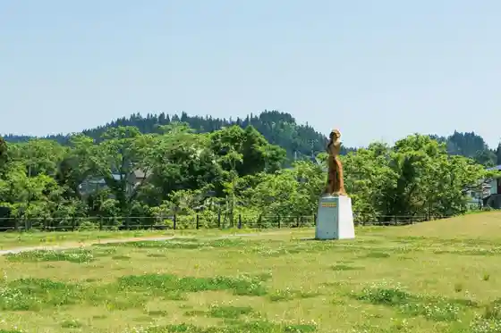
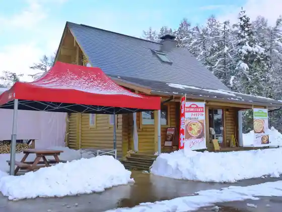
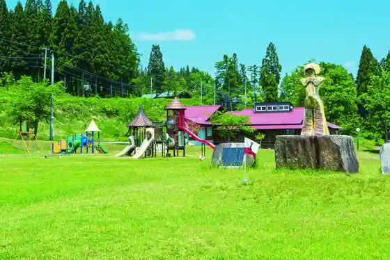
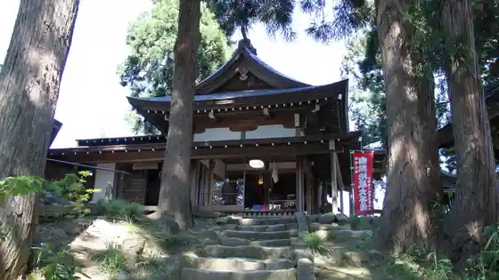

Nishi no Mae Iseki Park (Megami no Sato)
Funagata, Yamagata · 0233-32-2246 · Official / source link

Masshurumusutando Funagata
Funagata, Yamagata · 0233-32-0733 · Official / source link

Ayukko Village
Funagata, Yamagata · 0233-32-3655 · Official / source link

Saru Hane Sanchi Kura Mikoto
Funagata, Yamagata · 0233-32-2792 · Official / source link

Funagata Folk History Museum
Funagata, Yamagata · 0233-32-3495 · Official / source link
Funagata Jaku Ayu Onsen
Funagata, Yamagata · 0233-32-3655 · Official / source link
Ayu Park Funagata (River Park)
Funagata, Yamagata · 0233-32-2111 · Official / source link
Sanchoku Mansaku
Funagata, Yamagata · 0233-29-5370 · Official / source link
Funagata Kanko Bussan Center Megami
Funagata, Yamagata · 0233-32-3302 · Official / source link
Kunpu Kama Togei Experience
Funagata, Yamagata · 0233-32-0660 · Official / source link
Kenmin Gorufu Ba
Funagata, Yamagata · 0233-32-3344 · Official / source link
Arasawa Falls
Funagata, Yamagata · 0233-32-0844 · Official / source link
Shin Oku no Hosomichi (Enmusubi no Michi)
Funagata, Yamagata · 0233-32-0844 · Official / source link
Saru Hane Yama Park
Funagata, Yamagata · 0233-32-0844 · Official / source link
Buna no Mi Juku
Funagata, Yamagata · Official / source link
Fukusho Tera no Oicho
Funagata, Yamagata · 0233-33-2006 · Official / source link
Funagata Kusurishi Forest
Funagata, Yamagata · Official / source link
Matsuhashi Warabi Sono
Funagata, Yamagata · 0233-35-2665 · Official / source link
Teguramori Marsh
Funagata, Yamagata · Official / source link
Oya Sugi
Funagata, Yamagata · 0233-32-2246 · Official / source link
Mokichi Kahi (Funagata)
Funagata, Yamagata · Official / source link
Nembutsu no Matsu
Funagata, Yamagata · 0233-32-2246 · Official / source link